A Sandbox With A Direction
For this project there is no specific goal or conclusion: it should be seen as a sandbox to practice my skills and learning. But if there were to be an objective, I am aiming for a video game in a survival-zombie genre (probably), and all my work revolves around this theme. The practices present in the project so far:
Systems
Each system runs in realtime and is built to make the environment variable: no two visits to the school look exactly the same.
Randomized Ceilings
Ceiling tiles are placed, rotated and dropped procedurally: intact, hanging or fallen. One click regenerates the whole ceiling state of the corridor.
Blueprint breakdown
Light Tool
The lights cast visible rays, and the tool sets each light up with or without its physics constraint, depending on whether there is a ceiling above it or not.
Randomized Lockers
Each locker is assigned a state, open or closed, at every launch. When open, the rotation angle of the door is randomized, and so are the elements inside the locker.
Blueprint breakdown + states
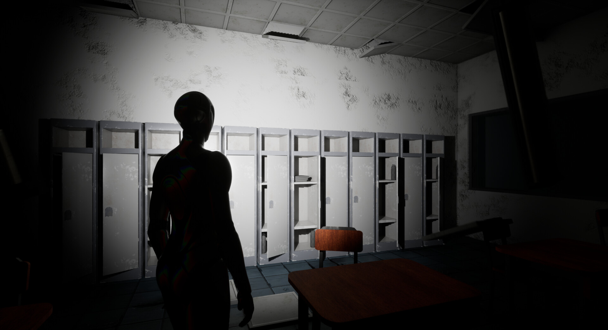
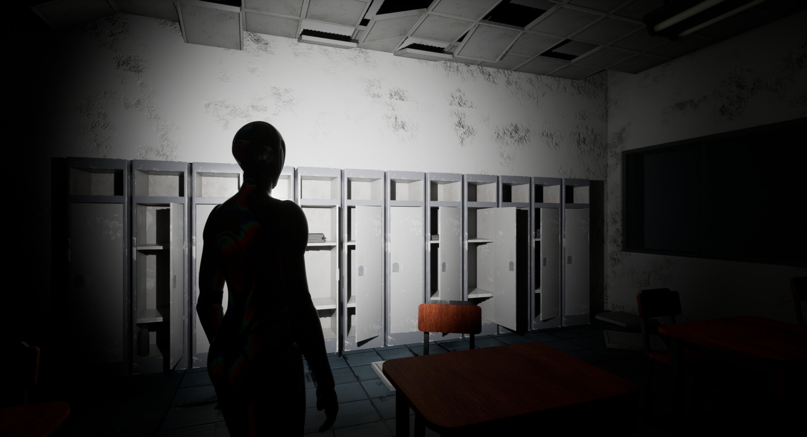
Door + Interaction Widget
A door driven by a line trace and a widget; this one was more of a personal desire. From what I have learned, I refrain from Blueprint casting in anything included in the project's build: editor-only tools can cast, but otherwise I primarily work with Blueprint Interface to communicate only the necessary information.
Blueprint breakdown
Tech Breakdown
The same scene through the engine's eyes: lighting isolation, Lumen, Nanite and performance passes. Click any pass to inspect it.
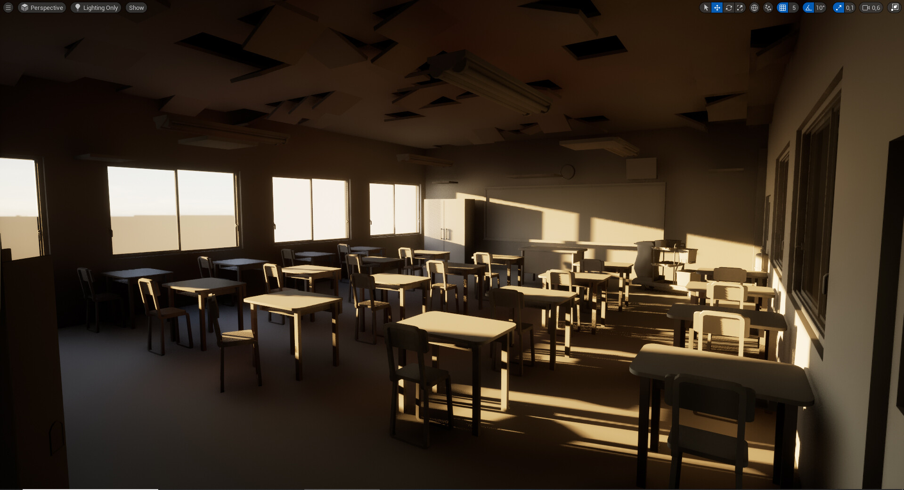
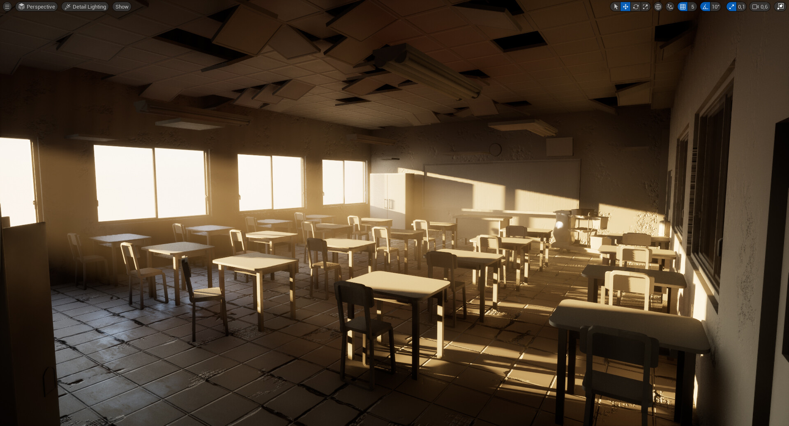
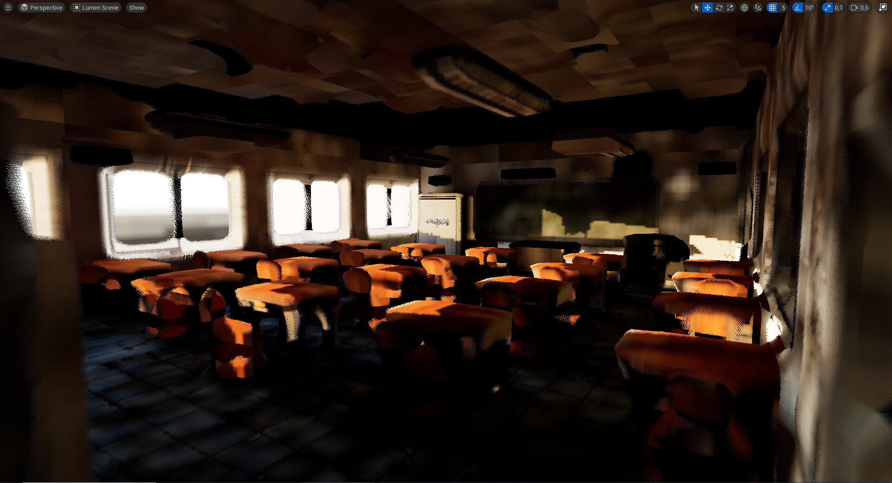
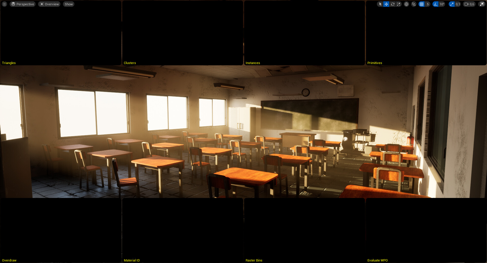
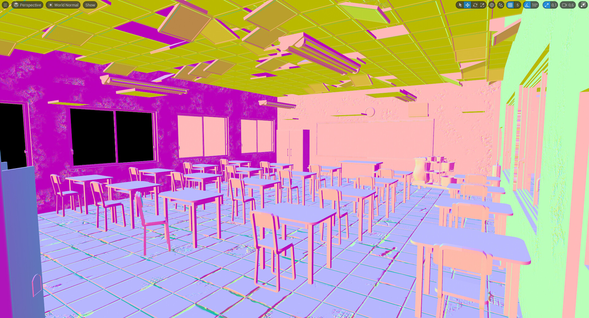
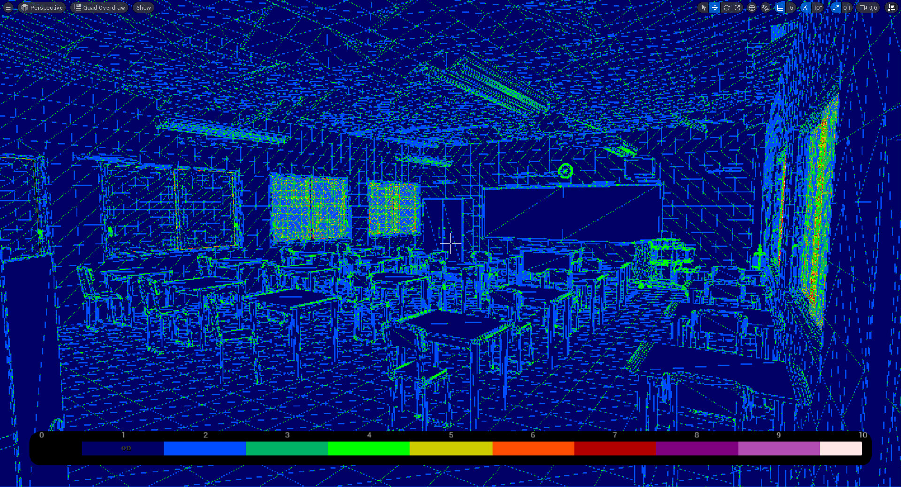
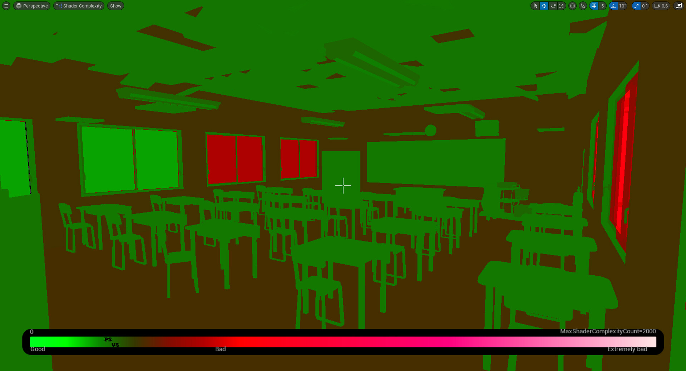
Current Challenges
I am starting to have a lot of actors in the scene, because the environment is much larger than this classroom. I am currently merging actors such as the ceiling Blueprints into a single one per building: instead of ticking 500 ceilings, I would only tick one for the same result. The Packed Level Actor is not an option from what I have tried, because it skips the functions inside, so there is no randomization. I am leaning towards creating an editor tool with Blueprint Utilities.
Final Renders
Captured in realtime in Unreal Engine 5, in the two moods the sandbox currently supports.
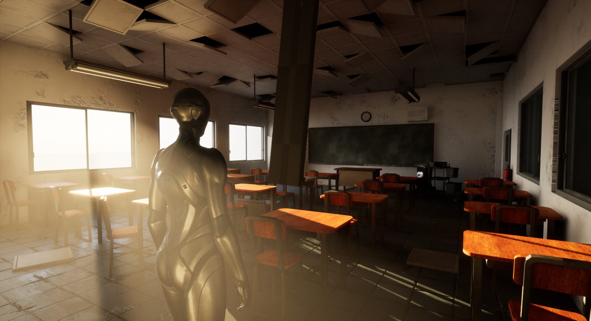
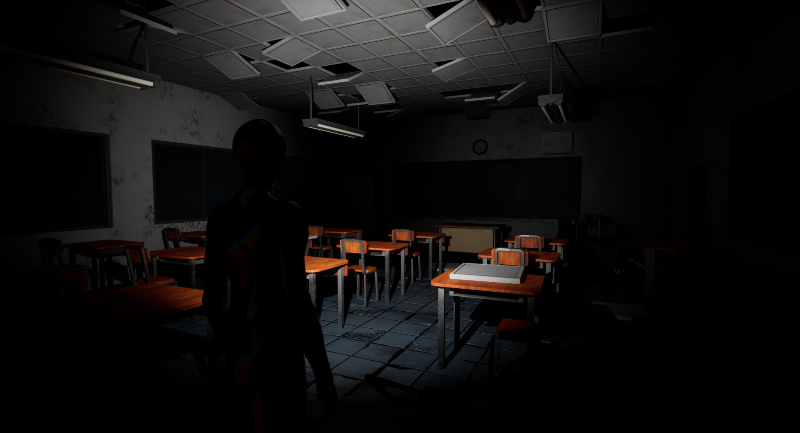
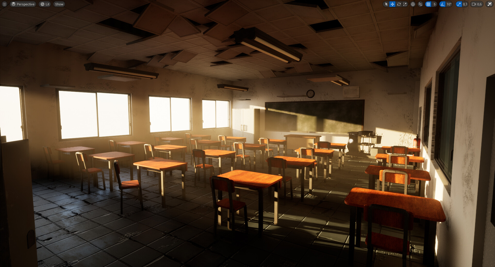